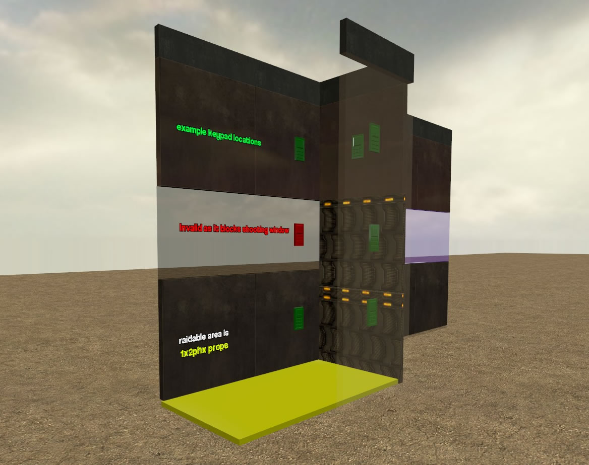
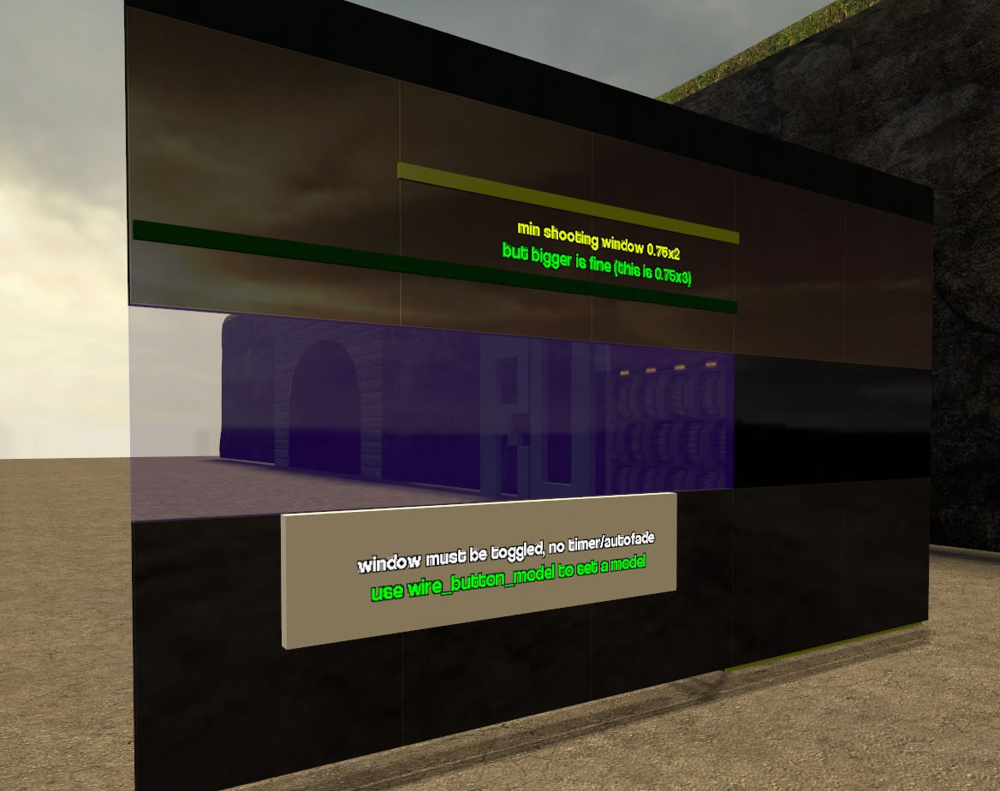

No results found for "".
Basic Rules
The Basics
- We try to be family friendly. You may swear to a civil extent but only in RP. Swearing in OOC will be punished with a quick slap and a polite mention to behave. RP swearing/racism must be done tastefully. You cannot run around calling everyone a giant evil rutabaga just for the fun of it.
- Instaban offenses: Spawn block, prop spam, toolgun spam, mass extremely random RDM (rooftop sniping everyone etc).
- Insta kick offenses are normally just for extreme vulgarity in OOC/homophobia etc. We don't care if you tickle men, women, ponies or rutabagas just don't be obnoxious and offensive in OOC.
- You may not prop climb, however you may use RP entities as ladders. Such as shipments, becki-boxes or even printers!
- Wire & E2 must be used to aid RP in realistic manners. Fading doors and the usual stuff. Any E2 deemed to be abusive may be removed.
- Please have a reason for demoting people.
- Vote yes unless you have a reason to vote no, it's not nice to be cruel.
- 'I'm building' is not a reason to propblock, leaving your base open should make people see you have no valuables. Prop blocks may be removed by admins.
- Do not Fading Door Abuse ? This refers to when you use a button, wire etc.. to quickly close a fading door again after being cracked. Fading doors must stay open at least 8 seconds (see below for more details)
- Using specifics prop or materials to get one way windows is only allowed when covering an existing MAP window.
- Votes, sales and any form of RP involvement has to be done through /advert and not through OOC.
- Do not use any form of command (eg: kill/suicide, change job) to avoid a RP situation.
- This should fall under common sense, but physgun beams should be visible.
- Having illegal items makes all your items classified as contriband. IE: You have two printers and an ammo shipment. Police can take everything, not just the printers.
- Printers may not be bought/sold/traded between players.
- There is no need to /advert raid.
- You must actually interact with someone to rob them. No keybinds.
- StupidWeasel (STEAM_0:1:24400282) is a meta creature and inhabits a different plane of existance to normal players. He does not exist in a roleplay sense & can (most of the time) be safely ignored.
- Finally and most importantly, play nice & have fun!
Death, Combat & NLR
Death, Combat & RDM
- Never use lethal force first. Killing someone is a last resort, not the first and best option.
- There should never be a reason for combat on newly spawned players at spawn.
- Never RDM (Random Death Match). This refers to killing randomly without a legitimate roleplay reason.
- While raiding you should only shoot those who are ARMED or you have good reason to believe they will harm you.
- You must have reason to kill an unarmed person. Examples would be: RP Robbery, blocking path of escape, refusal to leave property, taking hostile action - 911 calls or being a spy etc, official hitman tasks or a well though out hobo revolt against the king hobo!
- Unarmed is classified as equipped, however during raiding it's safe to assume certain jobs are armed.
- Classification of 'helping a friend'. In RP terms your friends are your gang members, employers etc. You may protect them, defend them, avenge them all to a degree. Remember the aim is to have fun. You may not go on a revenge rampage due to a guy you play with on the odd second Tuesday being on just because you want to RDM someone.
- Inciting RDM. Hobo revolutions, killing all cops or your average anti Swedish campaigns. These are not RP, they are excuses to RDM so don't do it. Protests, revolutions, hobos united etc is all allowed but in a proper fashion and not a /job Cop Killa kinda of thing, although in a decent situation a peaceful protest can turn violent etc, but that's not the same as simply shooting people.
- Pistols & Shotguns are, by default, legal. Cops may not arrest a player for simply carrying these weapons, and must ask them to put the weapon away. Players who refuse to do so after a resonable period may be arrested. Players may also be arrested for using a legal weapon threateningly (discharging it in the street, for example) <-This rule may be altered by an active mayor->
- You're not required to advertise the fact you are raiding, if you do law enforcement officers are welcome to /warrant you immediately (and it may be considered baiting, depending on the circumstances)
- Intentionally killing players with a printer ("Printer Bombing") is treated just like attacking them any other weapon. If you've no reason to kill them (ie: they're innocent or unarmed), it'll be treated as if you've broken the applicable rule above (ie: RDM).
- However throwing a burning printer out of your base to save your life is common sense and is not RDM.
New Life Rule (NLR)
- NLR is an acronym for New Life Rule. New life rule is, simply stated, the rule that states if you die, you must not return to the area of your death for 5 minutes.
- If you must pass the place of your death then do not interact with the area or the people involved. Simply walk past the property.
- You can not simply stand outside it watching and waiting and then BAM jump in after exactly 5 minutes and murder them.
- You can however after 5 minutes insist they leave, if they do not after a few minutes you may murder them at will :)
- You may ask the raiders if the raid has expired. Since this is not a pure RP situation you may ask in OOC, however it is preferred to ask in a PM.
- If you accidentally kill yourself building then you may return to the place of death.
- If you die of accidental death DURING an RP event, such as a base raid, then NLR does apply.
- If you break NLR you may be punished by an admin with either a Slay, Kick or 60 minute ban. Repeat offenders may receive harsher punishments.
Job Rules & Guidelines
Criminals
Kidnapper:
- You are a predator, and the darkened alleys in town are your hunting ground. Kidnap people to molest, torment, and ransom!
- You are also a loner, and a weirdo. You do not work well with others or operate in a gang.
- Do not use this job as an excuse to RDM. You may only kill your victims if they attempt to escape, or do not follow your orders, or their ransom isn't paid.
- It is also allowed to kill your hostages if you grow tired of their company, but only if you have had them held captive for a minimum of 10 minutes.
- You may make a base, but you must be out of it and actively sneaking around and looking suspicious.
- You may not base with anyone else: even other kidnappers, hired bodyguards or mercs.
- You may not raid.
- You may not be part of a gang.
- Do not use this job to just knock out and RDM people.
- You may not target the same individual over and over. Once you've kidnapped someone, you must have a different target afterwards for at least 10 minutes.
- Do not bludgeon someone just to steal their weapons. This will be treated with an instant ban.
- You may not take part in raids.
- You must attempt to avoid being seen by police. This is RP, and you are a strange person who kidnaps people. You are not BFFs with the Mayor.
- You may be hired by certain jobs to obtain targets for them.
Pickpocket:
- Hands to yourself, sneak thief!
- You are not allowed to mug. With skills like yours, why would you ever need to? You must RP your job. No running up to people and demanding they wait for you to
pickpocket them. Be an opportunist.
- You may not raid.
- You may only base with other pickpockets.
- You may not be part of a gang.
- You must RP your job. Failure to do so will result in a ban, and perhaps even a permban from using this job.
Black Market Dealer:
- You are the secret weapons dealer. Be subtle, and don't publicly advertise your shady dealings.
- This job is illegal, and primarily deals in remote, secluded alleyways. If you have a store, it must be very subtly disguised. You sacrifice security for subtlety.
- A BMD store may have only one keypad door to be used on a small safe. You cannot use base/raid defences. (shooting windows, raid entrances, etc.)
- You can hire a bodyguard, but make sure that they are as disguised as your store.
- You may not use automatic gun stores.
- You may not be part of a gang, though you may be "bought out" by one and refuse to sell to anyone else. Buyout charge must be over 50k.
- You SHOULD own a secret shop. A banana stand that has guns in the back room. A bar that literally sells shots. Stuff of that sort.
- You may not raid, ever.
- You may not mug people.
- You can be a mobile seller, but remember, the police are everywhere and they do not have to /wanted you before arrest if they see you selling to someone.
Meth Cook:
- You're no Heisenberg, but you're damn close.
- Your job is illegal and if you are caught by the police, or the DEA if you're very unlucky, you are going to face hard time.
- You can employ a bodyguard, or hide a merc firm for protection, but you may not work with other cooks or within a gang building.
- Do not use E2 chips to accelerate the process of making meth. The job earns a lot of filthy money, shortcuts aren't needed.
- Almost everything you do is illegal.
- You cannot base with a gang, but you can be part of one.
- You are required to tell any gang you join your base coordinates. You do not have to grant them access to your keypads or doors.
Thief/Master Thief:
- It's your job to perform cunning stunts! Wow others with your criminal finesse. You can work in a gang, or as a lone wolf. Players can be mugged for no
more than $1,000 but they can be told to drop items of value that you know them to be carrying.
- You may raid.
- You may be part of a gang.
- You may mug.
- You can only be part of gang using the Mob Boss/Gangster gangs. No Resistance.
- You may freelance for the Resistance, but you may not base with them. You will be hired per job.
- Everything you do must be at least attempted to be sneaky. No buying body armor and shooting everyone dead before forcing your way into a base. That being
said, if a group is hiding in their base, you may strong-arm your way in if they don't come out of hiding for a while.
- You may break into the PD, but you may not "take over" and declare you are in charge of the PD. Shutting down the government is a job for the Resistance.
- No kidnapping anyone. That is a job for the kidnapper.
Hitman:
- The serial killer that accepts credit cards! And the alternative to diplomacy when your neighbour refuses to trim his hedge.
- Contracts must be taken out with a valid reason. We aren't saying you need to ask your customers for a reason, but if you suspect metagaming or NLR to be afoot then don't accept the hit.
- Accepting hits on the same person on repeat is breaking NLR.
- You are a lone wolf. You do not ally with others, employ guards, or operate in gangs.
- All of your weapons are illegal. If a cop uses a weapon checker on you, you are screwed.
- You may set up a base, but you are to have no extended stays in said base. Think of it more of a resting/planning area.
- You may not be part of a gang.
- Do not ask people to put a hit out on someone you want to kill. This is metagaming and RDM.
- Do not advert. This includes "Need help with someone" or other things that don't directly say you're a hitman. Murderers don't put out want ads on Craigslist.
- Do not use this job as an excuse to RDM.
- Remember, changing jobs and having someone put a revenge hit out on someone breaks about 5 rules and will lead to an instant ban. Just a friendly reminder.
Gangster:
- Underlings to the Mob Boss. He says jump, and you ask for a pogo stick. You aren't forced to work for him but it is encouraged.
- As with the thief, you may join gangs, raid, mug, and commit crimes.
- You may be part of a gang (obviously.)
- You may raid.
- You may mug.
- If you join a gang and align with the Mob Boss, you must all have the same /job name. IE a Mob Boss and 3 Gangsters all do "/job Ridelovers."
- If you are aligned with a Mob Boss, he is in charge. Think of it the same way Police Chief is in charge of Police. You do what he says.
- Most things you do are illegal, so direct confrontation with the police is to be avoided as best you can, unless you're breaking into the PD or
some other RP reason that contact with police is unavoidable.
- You may not raid and "take over" the PD. That is a job for the Resistance.
- You may have a thief in your gang, but only one. This includes Master Thief. If a thief is in your gang, he is still required to follow the RP rules
of his class.
Mob Boss:
- The town's very own King Pin. Your primary duty is to keep your underlings in line, as well as ensure that the town doesn't forget who you are.
- You can mug and raid, and if you are in a gang you must be the leader of it. You take orders from no one.
- You may be part of a gang (again... obvious.)
- You may raid.
- You may mug.
- If you join a gang and align with the gangsters, you must all have the same /job name. IE a Mob Boss and 3 Gangsters all do "/job Ridelovers."
- If you are aligned with Gangsters, you are in charge. Think of it the same way Police Chief is in charge of Police. They do what you say.
- Most things you do are illegal, so direct confrontation with the police is to be avoided as best you can, unless you're breaking into the PD or
some other RP reason that contact with police is unavoidable.
- You may not raid and "take over" the PD. That is a job for the Resistance.
- You may have a thief in your gang, but only one. This includes Master Thief. If a thief is in your gang, he is still required to follow the RP rules
of his class.
You may offer protection to Meth Labs, allowing them to use /job to join your gang. They may not base with you, and you must charge them protection
money of at most 25k per 20 minutes.
Resistance Operative:
- Smash the system! Follow your leader's orders, and hope to come out clean and oppression-free on the other side. This job is not an excuse to RDM the police.
- You may only gang with your fellow resistance operatives and your leader. Any crimes committed (raiding, mugging, etc.) must be to spurn the police and government.
- You don't behave like other criminals, you are criminals with a righteous agenda. If you raid a gun store, it's because that gun store only sells to the police and you want to spike their resources. If you kidnap someone, make it someone who can turn the tide of your battle against the corrupt system. Break the law in
ways that contribute to your cause.
- You may raid government buildings/bases.
- You may hire kidnappers to kidnap the mayor or any police members for you.
- You may not open fire randomly on any law enforcement you see. You are about freeing citizens from the oppression, not indiscriminate murder.
- You must always have a Resistance Leader. If no one is currently in that position, you are to fill it. Resistance with no leader will get warned and have 30 seconds to fix it before being forcefully demoted.
- The Leader is in charge at all times. You MUST listen to him.
- You do as much as you can to foil law enforcement. Break criminals out of jail, take over the PD, open fire (without hitting) on police who are harrassing citizens, etc.
- You may take over the PD, but you must attempt to do so without killing. That said, if SWAT rushes in guns blazing, you may end them.
- You're a modern-day Robin Hood. You are allowed to steal from the PD lockup and distribute things to random citizens. Keyword being citizens. You are not to give RP items and weapons to other criminal classes.
Resistance Leader:
- Lead the resistance and bring about the downfall of the government. You may only gang with your resistance operatives.
- You may raid government buildings/bases.
- You may hire kidnappers to kidnap the mayor or any police members for you.
- You may not open fire randomly on any law enforcement you see. You are about freeing citizens from the oppression, not indiscriminate murder.
- You are in charge at all times. Operatives MUST listen to you at all times.
- You do as much as you can to foil law enforcement. Break criminals out of jail, take over the PD, open fire (without hitting) on police who are harrassing citizens, etc.
- You may take over the PD, but you must attempt to do so without killing. That said, if SWAT rushes in guns blazing, you may end them.
- You're a modern-day Robin Hood. You are allowed to steal from the PD lockup and distribute things to random citizens. Keyword being citizens. You are not to give RP items and weapons to other criminal classes.
Hacker:
- By day, you're a simple nerd. But by that same day you also happen to be a professional hacker! This job obviously uses certain phrases that are considered widely controversial. Be responsible, and if you have to throw the lingo around in OOC be clear in what you mean as misinterpretation will lead to trouble. Hacking terminals are illegal contraband, and being caught with them or using them will result in jail time as well as a sternly worded letter from your ISP.
- You may not raid.
- You may not mug.
- You may only base with other hackers. You may not even have bodyguards.
- Hacking terminals are illegal. Do your best to hide them in secret areas, as you will be arrested for owning them.
- You can own weapons, but you cannot run around in the streets doing God knows what. You are a sociopath who hides in his room on 4chan all day.
Mercenary:
- The hired guns of the town. The people that are hired when expense is no issue, and only the best will do.
- You cannot be hired simply to kill people, but if you are hired to raid or mug and are given cause to kill don't hesitate.
- This job is not a secondary bodyguard job, you cannot be paid simply to guard a property, or a business as a bodyguard would. Your partnerships must be temporary, coming to a close after the raid/mug/task has been completed. You can raid alongside your employer(s). Only the Mayor may hire mercenaries to work alongside his officers during extreme emergencies.
- You may base, as a mercenary firm, but you must base alone or with other Mercenaries.
- You may only raid or mug if hired to do so.
- You ONLY work with criminals. Police do not need Mercs. Exception being if their is a lockdown and the Mayor personally contacts you.
- You cannot run around RDMing. Killing is a hitman's job.
- You must only work with criminals on a contratual basis. Once the job is done, your friendship ends for the time being.
- Having a client /write instructions on who you should mug, raid, etc is preferred but not required.
Civilians
Citizen:
- You are an average Joe. You live your life day by day, chuggin' along. You may own a home, and even a business, but cannot base. You may have a small keypad protected safe, but no other security defences. You are allowed to work as a civilian employee in other people's businesses, but cannot defend the business or your employer in the event of a raid or attack.
- You may not raid.
- You may not mug.
- You may only base with other citizens.
- You must own an RP house or apartment. Wandering around the city without a home is a job for the hobos.
- You may only own a pistol, unless the Resistance shows up at your house and needs to stash some stolen good. You are not required to let them do so.
- If there is a lockdown, you must immediately return to your home, else be arrested. No two ways about it. Doesn't matter if you're "DOING E2" or "afk."
- You may not have a raiding entrance on your home. You want it to look like a house/apartment, not Fort Knox.
- You are a scared little pleb. You ALWAYS call 911 when you see any criminal activity. Unless it's your own illegal contriband.
Doctor:
- Your job is to heal the sick, for free or for excruciating prices.
- A doctor cannot be a part of a gang, nor can they base. This job isn't intended as an opportunity for self-healing gun slinging.
- Like any legitimate vendor, you may hire a guard to protect you and your business.
- You may operate out of a small street stall, separate from where you create your medicines.
- You may not raid.
- You may not mug.
- You may not be part of a gang.
- You may not own any guns besides a pistol.
- You are encouraged to hire a bodyguard for your doctor's office.
- You may not base, but you may build a Hospital or something of the likes. It cannot have a raiding entrance, but it can have a backroom and/or safe with printers.
- You can charge ridiculous prices for your healing items, but try not to overdo it. 30k for 15 hp is a little extreme.
- You may be bought out by a gang or police. They must pay you at least 50k in order to do so. You can then refuse to sell to anyone except whoever bought you out.
- You must have a sign or job title that says "Bought out by Ride" or something similar.
- You may hire a kidnapper to get you a hobo "test subject." They can only be confined inside your lab for ten minutes or less.
Bank Security:
- The banker's job is to safeguard and manage the funds of the town, and your job is to make sure that he doesn't come to harm when the mob begins asking where their money is.
- It is recommended that you wait until a banker is active before using this job. No banker means no employment!
- Your primary post is at the bank, or outside/near it. If you're seen wandering too frequently for too long you may be demoted.
- As bank security, you cannot be employed by anyone other than the banker. You work for him in the same regard that the police work for the Mayor.
- You may not be part of a gang.
- You may not mug.
- You may not base anywhere except the bank. You may build an RP apartment for when you're off duty, but you may not have any raid entrances to it.
- Your entire job is to protect the banker and the bank. You are authorized and licensed to dispatch deadly force to any armed assailants.
- The Banker is in charge of you. If you're "off-duty" and he says you're needed at the bank, you drop everything you're doing and report to the bank.
- You must spend the majority of your time at the bank. Going "off-duty" is only allowed for 10 minutes every hour.
- Do not run around attempting to assist the police in public. This is a great way to get arrested and/or demoted.
- Do not RDM anyone that comes in the bank. You are there to protect the vault.
- You may chase any assailants who escape the bank, but you must call the police to assist. Once they are on scene, you must return to the bank.
- If a break in to the bank occurs, you are required to call 911 before engaging.
Banker:
- Ol' Moneybags! Your duty of care is to ensure that the people's money remains safe and unharmed. To do this, you may employ bank security.
- You may only hire bank security to protect your establishment. These security guards work for you no matter what, and can be fired for misbehaving.
- As the banker you may have up to ten safes to store the belongings of your valued customers, at a rate of your choosing.
- You may not base.
- You may not raid.
- You may not mug.
- You may not be in a gang.
- You are allowed to build a custom entrance or layout for the bank, but it must have a raid entrance that follows server rules for raid entrances.
- You are allowed to build a saferoom for yourself in the bank. This can literally have no way of breaking into from the outside at all, but it must
not contain any RP items. None. You are a frail old rich man, you're allowed to hide and cry in the presence of armed robbers.
- You are in charge of the Bank Security. They must listen to you at all times.
- You may propblock the sewer entrance behind the bank, but only if you have a toggle-able keypad somewhere inside the bank that robbers can crack to use the sewer tunnel as an escape route. It does not have to be next to the sewers, but if it isn't it must be labeled as to what it is.
Radio DJ:
- You provide the people with entertainment in the form of something to relax to, even if their definition of relax is leading an armed robbery.
- Don't use the radio to play unpleasant/annoying sounds, or use this job to intentionally bother others.
- You may not have a raiding entrance.
- You may not mug.
- You may not be in a gang.
- You are encouraged to hire a bodyguard.
- You must broadcast your station from inside a building. No street stalls.
- You will be banned from being the DJ permanently if you're intentionally playing loud annoying music/sounds with no reason behind it besides to annoy other players. That being said, if it's just music that isn't someone else's taste and they complain it's annoying, you can safely ignore them.
- You may own an apartment or house for your off hours. This can not have a raiding entrance, but it may have a safe to keep valuables.
- You cannot own gun shipments, but you may own a handgun for protection. The only exception for this is if the Resistance needs to hide some stolen items and you agree to it.
Hobo:
- Ah, the lowest of the low. Barring Chas. Remember that you are a homeless bum. Anything that you build as hobo you cannot use keypads. Hobo huts must be compiled
of the trash that might be found on the street, or at the local junkyard. (HL2/CS:S props) - No PHX. Huts must also be kept off of the road and cannot obstruct
buildings or walkways.
- You may not raid.
- You may only be in a gang with other hobos.
- You may mug, but only alone and you may only have a pistol equipped during the mugging.
- You may only build bases using non-PHX props.
- You may not own doors.
- You can "squat" in unowned buildings, but if someone buys the doors, you must vacate immediately.
- You can build a hobotown, but only in the vacant lot across from the church, or in the subway (the actual subway stations, not the entire subway.)
- You can have a hobo uprising, but it must be entirely non-lethal.
- If you are captured by a doctor, suicide to escape is a bannable offense.
Gun Dealer:
- The legal weapons dealer. You cannot be arrested for selling your wares, unless selling the illegal weaponry provided by the Black Market dealers.
- If you have been a gun dealer for more than ten minutes and have not begun setting up shop you may be demoted. Aside from the odd cake break, this store must be manned.
- You may only buy yourself weaponry when inside your shop, doing so elsewhere is self-supply. It is also self-supply to use this job to stock a gang to the brim with guns only to switch jobs and join them a?“ Wait at least an hour before joining any gangs you've sold shipments to.
- For the protection of your shop you can hire a bodyguard. Guards are the only people you can work with.
- You may base, but only with other Gun Dealers. No shops with BMDs.
- You may hire a single bodyguard.
- You may buy shipments off BMDs to suppliment your stock, however if police see that, all of your currently spawned items become classified as contriband, and will be confiscated. This includes armor and ammo.
- You may not raid, ever.
- You may not be part of a gang.
- You can be hired as a government supplier. If you are, you may choose not to sell to citizens at all. You must have a sign showing you are a "Government Supplier."
- If you use the Enhanced Gunshop, it must be placed inside or near a building you own. No just throwing them on random street corners or in alleys.
- Once you switch to Gun Dealer, you have 10 minutes to set up a shop and start selling. You can continue to build after, but you cannot sit in a base for 4 hours not selling weapons and saying "BUILDING!" every time someone shows up.
Bodyguard:
- The protectorate. If you're hired, it's because someone fears for their lives and/or personal belongings, and needs them to be guarded. Use this to charge as little or as much as you like.
- You may work for whoever you like, as long as they are in turn allowed to work with you.
- Bodyguards cannot be in a gang, but they can be hired by a gang. They cannot raid, for example, but can be paid to remain at the base to protect it.
- This job is not to be used as a mercenary class. You are paid to guard people, places, or things, but generally stray away from criminal activity if possible.
- You may only base with your employer.
- You may not raid. Ever.
- You may not be part of a gang or be hired by gangs.
- You may not mug.
- You can be hired as backup for the Bank Security by the Banker. If you do, you must abide by all Bank Security job rules.
- You may own RP items inside your employers shop or base, but only if they consent to it, as you're both liable for anything found inside.
- You may not KOS anyone who enters a building you are guarding.
Cinema Owner:
- You are the connoisseur of romantic copy/pasted dates and overpriced food.
- Do not play videos that breach the NSFW line. We are not saying that everything played must be child friendly, only that it must be moderate. Use common sense, and if you have to ask if you can play something, you probably can't.
- You may only base inside the movie theater.
- You may not have any raid entrances.
- You are allowed to propblock the entry doors at the beginning of any video you play that is over 20 minutes in length. There must be a button on the inside to get out. This will ensure
no morons come in with no reason except to disrupt movie-goers.
- You may not have RP entities of any kind within the screen room.
- A person who RDMs movie-goers for no reason should be reported immediately, as they will get the long end of the ban hammer up their butthole post-haste.
- You may only own legal guns, and only a single one for protection.
- You are allowed a safe, outside of the screen room, but it must be accessible to thieves.
Lawyer:
- As a lawyer your responsibilities are providing your clients with legal aid and counsel when they are arrested. You may charge whatever you like. This job is not a 'get out of jail for free' card. You may release players only when you have either accepted their bail or won their case at the discretion of the Police Chief or Mayor.
- You may not raid.
- You may not mug.
- You may not be part of a gang.
- You may build a small "lawyer's office," type base inside the PD if the Mayor allows it. You may also build it off-site somewhere if you wish.
- You MUST charge money to have a client released from jail.
- There must be a Mayor or Police Chief on duty for you to debate on a client's innocence. Otherwise you cannot have client's released.
- A client must contact you via PM in order for the bail process to start. You cannot randomly pick arrested citizens to have released.
- You may hide RP items like printers in your office if you so wish, but remember, lawyer's cannot negotiate their own bail.
Landlord:
- You must have primary ownership over all doors to any buildings that you decide to rent out. Add your tenants to the doors via /addowner
- You may own no more than two world buildings. One for your own home, and one for you to rent. You may rent out two buildings if you forgo your own home in order to do so.
- You may not be in a gang.
- You may not mug.
- Only the entrance to your building may have any sort of raid entrance, your personal apartment may not.
- You may own a pistol or shotgun, but only for defense, and no shipments. The only exception is if the Resistance asks you to hide something for them.
- You may only base inside one of the buildings you are currently renting out.
- You may not raid, but you can announce yourself outside the apartment and enter for random inspections. You may bring Police with you at your discretion.
- You will be required to pay the Mayor $1000 for every illegal item confiscated from one of your properties during a random police raid. This is why keeping current on your
random inspections is a good idea.
- You are also immune to the fine for illegal items if you are the one to call 911 to report it.
- You can not be arrested for your tenants owning illegal items, unless you are caught conspiring with them.
Vape Dealer:
- You may not be in a gang.
- You may not mug.
- You may either create a store, make a stand in the street (providing the mayor has set no law against this) or freely roam the streets selling your wares.
- Vape cannot be made illegal, outright, but mayors may make laws against vaping in peoples faces or vaping in public buildings (ie: The PD), keep this in mind
Law Enforcement
Mayor:
- You are the Governor of East Coast. Keep it sane, else the hitman'll come a knocking. The laws are yours to dictate, as is the way the police operate. However no alterations may contradict the server rules. Certain things must always be illegal (raiding, assault, printers, hard drugs etc.) so use common sense. A lockdown can only be initiated with a valid reason. An assassination attempt or utter chaos in the streets, for example - Broadcast the lockdown reason via /madvert, communicate with the people! You are, at heart, a politician. You do not enforce the laws yourself, and leave that nasty dirty work for your officers. You may be corrupt in-character, but be wary that if you are caught it will lead to a demotion. The construction of roleplay structures such as checkpoints is allowed, but only with the approval of a currently online superadmin. You may hire assistants via the F4 menu, but these assistants are bound by the same rules as the Mayor.
- You may own an apartment, but Police can and will search it for all contriband.
- Finding you in possession of illegal items is a valid demote reason.
- You may not join officers in raiding bases,
- You, obviously, cannot be part of a gang.
- You dictate the laws, but invalid laws, or laws that go against server rules are not permitted.
- If there is no DEA Agent and your officers find drugs during a raid, they must report it to you before destroying them.
- If a lawyer contacts you about getting a client bailed, you must respond to him.
- You MUST have a valid reason for lock downs. This can be a rogue criminal or a peaceful protest you wish to end, long as it's a good reason it's fine.
- You must follow all Police rules.
- You may not legalize printers, if police are caught owning printers you are expected to punish them. However corruption and politics ...
- You may place some roleplay props around town (for example: pretty trees or evil skulls, depending on how much of a tyrant you are). These should not overly obstruct players / get in the way of any world doors.
- Running around killing criminals and generally being an idiot will get you demoted immediately.
Police Officer:
- You are the people who enforce the laws of the city! Good luck, and be mindful that acts of misconduct such as shooting windows or wrongfully tazing the homeless will lead to demotion.
- Do not randomly arrest, raid, or warrant. You may own a roleplay home. Like citizens, this roleplay home may have a small keypad protected safe but no other defences. Lethal force may only be used when necessary. If a criminal has used lethal force themselves, for example. "They were wanted" and "They were running/were too far away" are not valid reasons for lethal force. Search warrants are only required if the reason for the raid is not already clear. You would require a warrant to raid a methlab for example, but not a base to stop an ongoing raid.
- Entering private property requires a proper reason. You shouldna??t randomly try to open doors or walk inside private property. How often do you see police running door-to-door, rattling every single door handle? Much like the Mayor, it is not against the rules for you to be corrupt. But getting caught will result in demotion. If you have made someone wanted and that /wanted expires, you are still allowed to arrest and can even /wanted them again provided that it does not breach NLR. If you die, you may only re-want/arrest them if you see them commit another crime. NLR trumps the previously made /wanted. Do not use the weapon checker without valid cause for the search.
- You cannot base.
- You cannot raid unless instructed by the mayor or with a valid warrant.
- You, obviously, cannot mug.
- You've been given a tazer. This is to encourage arresting over murdering. Do not abuse it or it will be restricted.
- Public corruption may result in being demoted via /demote. That been said, sneaky deals behind the chiefs back is what pays for that swimming pool.
- If you are role playing very well you may own a small home and decorate it as you wish, maybe /citizen while off duty etc. You may not have a base of any kind.
- You must have cause for entering properties, or taking any hostile action. Reasons for hostile action have to be absolute. Suspicion alone is not absolute.
- Only highest ranking officer may give permission for props inside PD, ie security. Rank is: Mayor -> Chief -> -> Deputy/Assistant. Swat and Police have the same rank.
- You may arrest without arrest warrants. However please use them IF able. We don't expect you to type out warrants while being shot at.
- Remember you're civil officers, be nice, be polite, be cautious and above all else arrest or shoot those robbing murdering filth.
- You may work with informants, it is encouraged when done properly.
- 911 calls will flag up a HUD display showing the rough location of the incident. These calls ARE valid reasons for entering property.
- You're expected to act sensibly & do your job. Charging around shooting up the streets, throwing flashbangs everywhere & blowing off doors left, right & centre is, surprisingly, not your job - and will lead to you being demoted.
- Using a few roleplay centric props (for example wooden or concrete barricades) when raiding a gang warehouse / having a stand-off with an armed suspect is fine. These props should not obstruct players, and should be removed once the matter is dealt with
- The Police Chief may deputize and fire almost any player with the /deputize and /firedeputy commands (also under the F4 menu)
- Deputized players get door access to the PD, access to group chat & a pretty sign above their head
- Deputies (and Mayor Assistants) may still be arrested for illegal acts - they may, however, have weapons in public - providing the mayor or chief give permission.
- The police chief is responsible for any deputies. If they repeatedly run amok & break the law, he's expected to fire them. If he fails to do so, he may be demoted for corruption
- Police and SWAT are the most powerful classes on the server. You will be judged harshly, and demoted/kicked/banned if found abusing.
SWAT:
- The closest thing that the town has to special forces. You are not a foot soldier. This job is a special unit, primarily called in to assist with raids and other large, dangerous operations. Hostage situations, out of control robberies, drug busts, these things are your territory. As a general rule of thumb, if lethal force is not required then the SWAT unit likely has no business intervening unless specifically asked by the Mayor.
- You cannot base.
- You cannot raid unless instructed by the mayor or with a valid warrant.
- You, obviously, cannot mug.
- Your job is to break into those hard to crack crime dens and take the fight to the criminals. Its not to walk around the street as a glorified beat cop arresting the odd criminal. You should spend a majority of your time in or directly next to PD. If you're not there you should be on your way to or actively raiding. The SWAT aren't just Police Officers with more armor.
- You are one of two jobs authorized to use deadly force over arresting. This doesn't mean you mercilessly RDM anyone you see a wanted sign near. This means that if you're called to take
down a criminal organization for the Mayor, you may shoot first and ask questions later.
- The SWAT Commander is entirely in charge of the confiscated weapons lockup. He may allow any Law Enforcement Officer into the Evidence Room to sort things out/grab weapons, etc.
- The Commander is the equivalent of the Chief for regular Police. He says, and you do. No questions asked.
- You are not to be used as a bullet sponge by the Mayor/regular Officers. Having a higher base starting Armor is for you, not for the Mayor to use you as a shield. You can
sacrifice yourself to save the Mayor if you choose to do so.
- Police and SWAT are the most powerful classes on the server. You will be judged harshly, and demoted/kicked/banned if found abusing.
DEA Agent:
- The drug enforcement agency. Invalids like the meth cooks and weed dealers make a killing from selling their product. Your job is to stop that from happening. You are allowed to arrest criminals for breaking the law, but are only obliged to do so if the crime is related to drugs/narcotics. The only raids that you may participate in are those on suspected drug dens. An exception to this is a time of crisis, such as a lockdown or if the Mayor requests your aid on an operation. In the event that narcotics are discovered by the police, they must call you and you must attend in order to dispose of said contraband.
- You may not base.
- You may not participate actively in Police raids. You are to be called upon after drugs are located. The only exception is if the base is known to have drugs in it, then you must be called on to assist in the raid.
- You can arrest people you see breaking the law or wanted, but you cannot run the streets looking for criminals.
- You should spend the majority of your time sneaking around, asking citizens if they've noticed any "shady characters," finding locations that might be drug dens, and reporting the to
the Mayor for further investigation.
- You cannot just camp the meth junkie or the weed dealers. You can spend a little time near them for a sting or wander around to check them every so often but you cannot just sit there waiting for criminals to show up. Go out looking for them.
Bounty Hunter:
- You are the guy that the Mayor sends when he doesn't want to risk losing any more of his officers. Think of yourself as the Mayor's lawful pocket hitman. You are not a police officer a?“ Enforcing the law itself is beyond you. This is not a standard hitman job. You work exclusively for the Mayor, who may only send you to hunt down criminals that have committed serious crimes and have yet to face justice a?“ You cannot simply run around killing every wanted criminal. Only those the Mayor agrees to hire you for.
- You may only work with a fellow bounty hunter or with hired mercenaries.
- You may own an apartment or house, but it cannot have a raiding entrance.
- You may not raid. If a target is inside a base, you must call for Mercenaries to be hired to get you in.
- You may not be part of a gang.
- You are at the Mayor's whim. If he calls for you, you go to him immediately.
- You do not bother arresting people. If the Mayor has set a target for you, you find and erase him from the city.
- You cannot run around RDMing saying the Mayor told you to, that will result in a ban.
- You do not have to advert "Hit accepted," because it's annoying and not RP in the slightest.
- If caught killing someone who isn't a target, you will pay a fine of $5000 to the Mayor. Doesn't mean you always will have to pay, but if an Officer sees it and reports it to the Mayor, you cannot refuse to pay him.
Undercover Police:
- As a member of the police force (DEA, Police Officer, and Chief) you are able to use the NPC undercover to hide your true alignment and allow others to behave as their true selves around you. There are however rules to consider when using this job perk. You cannot instigate crime. You may participate in raids, but cannot be the one to say 'hey, let's go hit that gun shop!'. The same applies to mugging, and practically all other crimes that you might commit in the aspiration of maintaining your cover.
- You must follow all Police rules.
- You may raid with a group you're investigating, but you must try your hardest not to kill anyone.
- You may not instigate raids or muggings.
- If the Mayor tells you that you're undercover status is no longer needed, you must go talk to the Undercover NPC immediately.
- If you happen upon a crime, it's smarter to report it to the Mayor and have it taken care of instead of blowing your cover.
- If you report a crime to the Mayor, he can /wanted the person from your report. Beware this is an easy way to blow cover if your targets notice you and no Police in the area.
Traffic Cop:
- You must follow all Police rules.
- You may create an impound lot to house cars that have been involved in a crime (hit & run, illegally parked etc..). You may charge a resonable amount (no more then 10k, adjusted for the crime) for a player to retrieve their car. You must fix the car for the player.
- You may not take part in propery raids, that's what the regular police are for, use teamchat to call them to a scene.
- You may not instigate raids or muggings.
- You may arrest players for minor acts of crime, but for anything serious you should get the regular police involved.
- Spike strips must only be deployed when required and should be removed as soon as possible. Abuse of them will lead to demotion.
Administration
Admin on Duty:
- This is a moderator class. You may NOT RP in this class.
- This is the only class that it is acceptable to noclip into other bases with a valid reason.
- You may only noclip into someone’s house/base to check it. But first you must /aadvert it.
- Example 1: /aadvert John, I am going to inspect your base for propblock.
- Example 2: /aadvert John, I am going to test your keypads.
- This does not apply for superadmins, on or off duty.
- You may not own bases/printers/weapons/items in this class.
- If there is a Superadmin or Superadmin-on-Duty, you should check with them before banning a player for non-severe reasons.
- If you want to have ridiculous admin wars, go play COD. You being a prick to your friends because it's funny usually interrupts other players who are trying to RP normally.
- You will be judged by your actions much harder here. Don't be a smackoff to players, don't act like you're better than anyone because you're an admin, or the Supers will
penetrate you. Hard.
Superadmin on Duty:
- You are the go to God of the server.
- Admin on Duty must ask you before banning for small infringements such as (RDM & NLR, etc)
- You may not RP as this class. If there are no other admins online or on-duty, try to respond to as many reports as possible.
- You must kill Chas at least once to be allowed to use this class. Failure to do so will result in death.
- If you want to have ridiculous admin wars, go play COD. You being a prick to your friends because it's funny usually interrupts other players who are trying to RP normally.
- Do not be a twat to players/lower ranking admins. If you're caught doing so, it will be posted to report it directly to a Root, and we we will handle it. Harshly. The
players are what makes InvisionRP. You are a Super because we've felt you're trustworthy. Don't make us second guess.
Gangs & Grouping Rules
Gangs & Grouping Rules
- Any player may create a gang, providing they're using one of the jobs below.
- The following may join any gang:
- Gangster
- Mob Boss (If is in the gang, must be gang leader)
- Resistance Operative
- Resistance Leader
- Thief
- Master Thief
- Gangs must make up no more then than 30% of the current player base or two players (whichever is larger). This number is rounded up to the nearest integer. Examples:
- 3 players - Maximum gang size of 2.
- 9 players - Maximum gang size of 3.
- 20 players - Maximum gang size of 6.
- You must have similar job titles. For example
- Gang name "Stinchers Destroyers!"
- Job titles could be anything "Stinchers ..." so "Stinchers Guard" or "Stinchers Lt" or "Stinchers Member" or whatever you like, long as you use Stinchers in the name to mark your membership of the gang.
- Gangs may only have 1 Thief or Master Thief with the exception being that a gang of all thieves is allowed
Base, Doors & Shooting Windows
Base, Doors & Shooting Windows
- We are sorry for the very specific rules, but over the years we've had enough of the arguments. These are strict rules, but please be warned not everything can be covered here.
Base/Store/House Rules -
- New rule: 3 EGP per BASE - per BASE, not player, per BASE. Giant gang base? Well, 3 EGP only!
- Large, lag-filled bases will be removed without warning. So do not spam massive props in your base (or, of course, any other form of props/entities).
- Build efficiently. For example, do not spam props in order to cover a place when it can easily be replaced by a single bigger prop. Remember other people play here, it’s nice to be friends to server resources and player machines.
- You may only use 1-way props to cover existing world-map windows. They may never be part of any of your entrances or safes. Neither may it be part of your defence system.
- Base rule is that enemies must be able to get to your valuables within 3 keypad cracks. This can only 2 doors and 1 safe. There are no rules on safe sizes but they are not allowed to have shooting windows and the door must be toggled.
- Entrances should be 1x2 horizontal minumum space, to fit at least 2 people standing, for each fading door. Both of them should be able to crack the keypad and shoot back if standing up, just in case there is a window.
- No hitbox glitching. At all. Anywhere.
- Do not abuse material/color tool to disorient people in your raid entrance.
- Propbases are only allowed by hobos. Your base may extend a few feet out, but may not be covering any public area besides a sidewalk or something of the likes.
- Only Hobos, Gundealears/Doctors with a market stall and the mayor (in a limited capacity) may build outside. Please see the relevant job section above for details.
- You may not use fences or elevated shooting platforms anywhere in a raid entrance
Fading Door Rules -

- No-collided props are NOT allowed.
- Doors must open as soon as any corresponding keypad is cracked. You may not use wire or e2 to delay the door opening.
- Safe entrances MUST use keypads only. No automated door systems. Base entrances can use automated doors as long as keypads are provided for raiders.
- An exception is made for law enforcement. A safe located within the PD may make use of a separate automated door, providing it's based on teams (usable example E2 script here). The safe must adhear to all other safe requirements.
- Your keypad MUST be open for at least 8 seconds.
- You can ONLY have 2 doors (+ one toggled safe), meaning no 5 sets of doors with buttons etc.
- Gararges are an exception to this rule. You may have an additional toggled keypad for your gararge door, see the gararge rules below for more info
- Only one door (including any closed world doors) should be between the customer and the outside world. The customer must be able to open the door from inside the "privacy room"
- Keypads need to be clearly beside the door they trigger, they can't be coloured, hidden or in obscure locations .
- If you have a world door that needs lockpicking, any fading door must be behind the lockpickable door.
- You must use the Unisec keypads for entryways. The regular Fading Door Tool is for shooting windows only.
- You may not run in and our of Automated Fading Doors in order to gain an advantage against raiders. If you are running from someone though you may run into your base through them to escape.
Gararges -
- You may have an additional toggled keypad, on top of the previously mentioned keypads, to control access to a player built gararge.
- You may have an automatic E2 controlled gararge door, however you must include a toggled keypad on the inside, so that players may take your car once they've broken into your building.
- Your player built gararge may not be part of your raid entrance. Gararges just using world doors may, of course, be before a raid entrence.
Shooting Windows -

- Must be at least 0.75x2, using PHX props to measure.
- No hitbox glitching.
- You may not use fences with your fading windows.
- It must be obvious whether the window is open or closed (textures, for example, should be at least 130 alpha)
- You may shoot from farther away from the window but you may not build a platform where you are higher up than the raiders.
World Door Ownership -
- If you find hobos squatting in a building you just bought, call the police. They will remove them.
- Make sure you buy ALL of the doors before you start building.
- If a player owns all of the doors in a building except one, including the front door, an admin may ask the player with 1 door to sell it. If the player refuses, the admin may kick them to allow the other player to purchase the door.
- This rule does not effect if someone owns the front door of a building. If I own the only door leading out of the building, that means that I automatically gain rights to the doors inside. The only way this rule doesn't affect anything is if there is more than one entrance to the building.
InvisionRP Admin Rules
InvisionRP Admin Rules
- You may build with noclip. But using it as fast travel, to rob people, to reenter and exit your base or for any RP terms will result in loss of noclip ability.
- If someone breaks rules, please give them appropriate warnings. If you need to kick put a reason.
- Only use !bring/!goto for ADMIN reasons. Do not use them for buying weapons etc or bringing friends.
- You must have proof before punishing someone. Please only react on what you see. Do not kick randomly based on OOC chat.
- All bans MUST include a clear reason. For example !ban iRIDEsisters 1440 "For being awesomer than Pantho". Ban duration is automatically displayed to the player.
- Remember it is a game, do not take things personally. Act calm and polite at all times. Help new players out, we have a lot of rules and they can't be expected to know them all instantly :).
- If you are dealing with a propblock, !bring the player to the door and ask them politely to fix it. If he refuses you may remove his door. If he accepts, give him 5 minutes.
- If dealing with a base that has faulty keypads/buttons (not long enough/not visible/not correctly placed/not working etc), you should bring the user and ask them to fix it as well as explain the situation. If the user specifically refuses to fix it, you may forceably remove the props/doors. If they recreate the enterance again without changes, you may ban them.
- Do NOT ban or kick other admins unless it is a serious offence such as propspam/spawnblock/permanently banning everyone.
- If a fellow admin is breaking the rules, file an admin report on the website.
- Please respect ALL Superadmins & Root Admins!
- You are NOT allowed to clean up Disconnected props unless it’s related to a ban, propspam, major propblock or spawnblock. Seen doing this illegitimately will give you an admin warning. (Command is now restricted to trusted).
- Demotes for RP Reasons are NOT against the rules. IE: If the Mayor demotes a cop for "Excessive Brutality | Fired" then do NOT punish them. They did nothing wrong.
- Breaking any of these rules will result in an admin warning. Superadmins & Root admins reserve the right to give you warnings as they seem fit if they find your actions abusive and/or damaging the community at large.
- Admins and players can and will be punished for bad or insulting conduct on the servers, including as a result of any form of influence. This also includes disobeying a superadmins or root admins. Users or admins can create tickets in regards to this matter (admins can still punish regular users), whilst superadmins+ are eligible to punish everyone including administrators as a result of their insulting/bad behavior.
- Note that the above does not mean that players must revere you as a god. So while offensive language is against the rules, "disrespect" is NOT a valid reason for slaying, kicking, banning or any other form of punishment.
InvisionRP Forum Rules
InvisionRP Forum Rules
- No swearing/abusive language. This, obviously, includes evading the cussfilter.
- Racial, Political and/or Religious discussions are NOT for gaming forums and will not be discussed here.
- No Adult or Abusive images/videos. Flash/Moderate language links MUST be labeled as such.
- Post in the correct topics.
- Any Player/Admin abuse ticket posted without the proper required field may be locked instantly. This includes SteamID’s and evidence.
- To reply to helpdesk tickets, you must be a trusted+ administrator OR directly incident with something useful to contribute. Replying to a helpdesk ticket that you're not involved in will result in a forum warning, forum ban or even a server ban in exceptional circumstances.
- All InvisionRP Staff and Helpers reserve the right to delete and lock your posts if they deem it worth such actions.
- All InvisionRP Staff and Helpers reserve the right to issue Forum Bans and Forum Mutes when deemed appropriate.
- Use common sense for other rules. =)
InvisionRP Helpdesk Rules & Guidelines
InvisionRP Helpdesk Rules & Guidelines
- Tickets require some form of hard evidence (screenshots, video or a demo). Tickets without this evidence may be immediately locked without reply.
- You should include a valid steamid. For player or admin abuse reports, this should be the steamid of the player or admin. For unban requests, this should be your steam id.
- As mentioned at the top of the helpdesk, "Witness Statements" are not valid evidence. This includes getting your buddies to vouch for you
- Ideally, when uploading a demo, archive it first. This reduces the size dramatically for all but the most voice heavy of demos
- Superadmin reports must be private messaged to a root admin. You may view a list of active root admins on the staff page. Like with other reports, you must include hard evidence
- Video based evidence uploaded to a video sharing site (eg: YouTube) should not be publicly listed. For YouTube videos, this simply means setting the video to unlisted. Publicly listed videos will not be accepted as evidence.
- If in doubt, please feel free to private message a root, super or trusted. We're happy to help and will tell you what you need to do :)